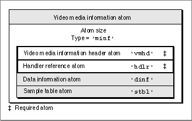
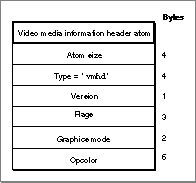
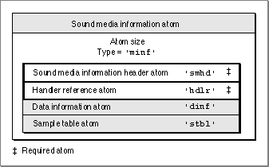
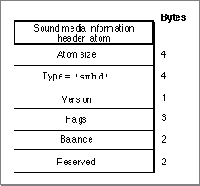

Media Information Atoms
Media information atoms (defined by the'minf'data type) store handler-specific information for the media data that constitutes a track. The media handler uses
this information to map from media time to media data. These atoms are formatted differently based on the type of media data stored in the atom. The format and content of media information atoms are dictated by the media handler that is responsible
for interpreting the media data stream. Another media handler would not know how to interpret this information. This section describes examples of atoms that store media information for the video (defined by the'vmhd'atom type) and sound (defined by the'smhd'atom type) portions of QuickTime movies.
- Note
- "Using Media Information Atoms," which begins on page 4-30, discusses how the video media handler locates samples in a
video media.
Video Media Information Atoms
Video media information atoms are the highest-level atoms in video media. A number of other atoms define specific characteristics of the video media data. Figure 4-17 shows the layout of a video media information atom.Figure 4-17 The layout of a media information atom for video

You define a video media information atom by specifying these elements:
- Size. A long integer that specifies the number of bytes in this video media information atom.
- Type. A long integer that specifies the type of the data (defined by the
'minf'
atom type) in this media information header.- Video media information. The video media information header atom (a required atom), which is described in the next section.
- Handler reference. The handler reference atom (a required atom), which contains information specifying the data handler component that provides access to the media data. See the chapter "Component Manager" in Inside Macintosh: More Macintosh Toolbox for more information about components. Figure 4-11 on page 4-13 shows the layout of a handler reference atom. The handler reference uses the data information atom, described by the
datainfofield in the video media information structure.- Data information. The data information atom, described in "Data Information Atoms" on page 4-21.
- Sample table. The sample table atom, described in "Sample Table Atoms" on page 4-22.
Video Media Information Header Atoms
Video media information atoms are the highest-level atoms in video media. A number of other atoms define specific characteristics of the video media data. Figure 4-18 shows the structure of a video media information header atom.Figure 4-18 The layout of a media information header atom for video

You define a video media information header atom by specifying these elements:
For comprehensive details on QuickDraw's transfer modes and opcolors and their values, see Inside Macintosh: Imaging.
- Size. A long integer that specifies the number of bytes in the media information in this video media information header.
- Type. A long integer that specifies the type of the data (defined by the
'vmhd'
atom type) in this video media information header.- Version. A 1-byte specification of the version of this video media information header.
- Flags. A 3-byte space for video media information flags. The
videoFlagNoLeanAheadflag is available, which instructs QuickTime that the video was not created skewed and that it should use a technique having greater accuracy.- Graphics mode. A short integer that specifies the transfer mode, which is a specification of which Boolean operation QuickDraw should perform when drawing or transferring an image from one location to another.
- Opcolor. Three 16-bit values that specify the red, green, and blue colors for the transfer mode operation indicated in the graphics mode field.
Sound Media Information Atoms
Sound media information atoms are the highest-level atoms in sound media. These atoms define specific characteristics of the sound media data. Figure 4-19 shows the layout of a sound media information atom.Figure 4-19 The layout of a media information atom for sound

In addition to the size and type information, the sound media information atom contains the sound media information header atom, which is described in the next section,
and the handler reference atom, the data information atom, and the sample table atom.You define a sound media information atom by specifying these elements:
- Size. A long integer that specifies the number of bytes in this sound media information atom.
- Type. A long integer that specifies the type of the data in this sound media information header (defined by the
'minf'data type).- Sound media information. The sound media information header atom (a required atom), which is described in the next section.
- Handler reference. The handler reference atom (a required atom), which contains information specifying the data handler component that provides access to the media data. See the chapter "Component Manager" in Inside Macintosh: More Macintosh Toolbox for more information about components. Figure 4-11 on page 4-13 shows the layout of a handler reference atom. The handler reference atom uses the data information atom, described by the
dataInfofield in this sound media information structure.- Data information. The data information atom, described in "Data Information Atoms," which begins on page 4-21.
- Sample table. The sample table atom, described in "Sample Table Atoms," which begins on page 4-22.
Sound Media Information Header Atoms
The sound media information header atom (shown in Figure 4-20) stores the sound media information.Figure 4-20 The layout of a sound media information header atom

You define a sound media information header atom by specifying these elements:
- Size. A long integer that specifies the number of bytes in this sound media information header atom.
- Type. A long integer that specifies the type of the data in this sound media information header atom (defined by the
'smhd'data type).- Version. A 1-byte specification of the version of this sound media information header.
- Flags. Three bytes of space for future associated flags.
- Balance. A short integer that specifies the sound balance of this sound media. (Sound balance is the setting that controls the mix of sound between the two speakers of a computer.) This field is normally set to 0. See the chapter "Movie Toolbox" in this book for more on sound balance.
- Reserved. Reserved for use by Apple. Set this field to 0.